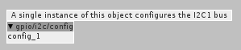

@SmashedTransistors wrote:
Maybe it is a good idea to start a new thread about "tips and good practices for I2C objects".
Here's my take on writing I2C drivers for Axoloti. Feel free to comment/contribute.
Introduction
I2C is a shared bus technology.
i2c wikipedia
Lot's of interesting chips have an I2C interface and the Axoloti provides an I2C bus on the IO pins.
If you have a new I2C device you want to hook up, you'll need to write an I2C driver/object for it.
I2C is a shared bus.
The Axoloti is the bus master. Each device is a bus slave. There can be multiple slaves on a single bus (each with a unique 7-bit I2C address). The Axoloti initiates a bus transaction (read/write) and the slave device responds. Each device is controlled by it's own driver- which will typically be a patch object.
Here are some best practices to ensure different device drivers work well on the same bus.
1. Provide a way for the user to specify a unique device address.
When the master (Axoloti) starts a transaction on the bus, it specifies the device it wants to talk to by using a 7-bit I2C address. The master talks to one device at a time, so each device needs a unique I2C address. The device datasheet will tell you which addresses a specific device can use. The device will often have some pins to customize (with hardware jumpers) some bits of the address. This allows the user to have multiple instances of the same device on the bus, each with a unique address. The driver writer needs to provide a way to specify which device address a driver should be using.
The device address needs to be specified at compile time. On Axoloti this can be handled by an attribute in the object:
<attribs>
<combo name="adr">
<MenuEntries>
<string>0x1d</string>
<string>0x53</string>
</MenuEntries>
<CEntries>
<string>0x1d</string>
<string>0x53</string>
</CEntries>
</combo>
</attribs>
2. Initialise the I2C bus only once.
The I2C bus needs to be initialized in the patch. A given patch might control multiple I2C devices, but the I2C bus should only be initialized once. The bus is initialized by a call to the i2cStart() function. This should not be called within the driver because with multiple devices each driver would make a call to initialize the bus. It should be called through a single instance of the i2c config object.
axoloti-factory/objects/gpio/i2c/config.axo
This object does not connect to anything in the patch, it just handles the IO setup and shutdown for the I2C bus.

3. Allocate I2C Transaction Buffers out of the SRAM2 segment.
The buffers used to tx/rx bytes from the I2C device need to be in the SRAM2 segment. If we look at the linker script we see:
SRAM2 : org = 0x2001E000, len = 0x00002000 /* second half (8kB) of SRAM2 for DMA*/
The bytes from memory to the I2C controller are DMA'ed so we need to use memory that can be DMA'ed. In the driver you can specify the segment in which the linker will allocate the storage by using the "attribute" pragma.
Example:
static uint8_t rxbuf[32] __attribute__ ((section(".sram2")));
This is more of a requirement than a best practice. If you don't do it the I2C bus transactions won't work.
4. Device IO operations should be in their own thread.
Axoloti uses ChibiOS which is a multi-threaded RTOS. The DSP thread calls the krate/srate functions of the patch and computes the audio. The DSP thread needs to run as quickly as possible so it can feed the codec.
The DSP thread should not be waiting for external IO to take place. The I2C bus operations should run in their own thread where they can run asynchronously without slowing down the DSP thread.
Example:
In the init function we create the IO thread:
// create the polling thread
s->thd = chThdCreateStatic(s->thd_wa, sizeof(s->thd_wa), NORMALPRIO, adxl345_thread, (void *)s);
And in the dispose function we terminate the thread:
// stop thread
chThdTerminate(s->thd);
chThdWait(s->thd);
5. Lock/Unlock the I2C bus around bus operations.
With each device driver running in its own thread we have multiple threads each trying to access the same I2C bus. The drivers will access the bus asynchronously, so we have to make sure access is properly shared. ChibiOS provides functions to lock/unlock the bus: i2cAcquireBus(), i2cReleaseBus() A given thread needs to get the lock before it uses the bus and release the lock after it has finished with the bus.
Example:
i2cAcquireBus(s->dev);
msg_t rc = i2cMasterReceiveTimeout(s->dev, s->adr, s->rx, 2, TTP229_I2C_TIMEOUT);
i2cReleaseBus(s->dev);
It's up to the driver writer to minimize lock time and not hog the bus. Many devices will be periodically polled/updated. Be a good neighbor. Take a look at the device datasheet and work out how slowly you can poll the device.
6. Lock shared memory access between DSP and IO threads.
The device driver IO thread and DSP thread need to communicate. This is typically done with memory shared between the threads. When one thread is writing the data, the other thread should not be reading it, and vice versa. Each thread has to get exclusive access to the shared memory before it reads or write it.
Example:
In the IO Thread:
// write to shared variables
chSysLock();
s->x = x;
s->y = y;
s->z = z;
chSysUnlock();
In the DSP Thread:
// read from shared variables
chSysLock();
x = s->x;
y = s->y;
z = s->z;
chSysUnlock();
In this example if you don't lock the shared variable access, you will potentially have x,y,z values being mixed up between samples.
Note: Using chSysLock/chSysUnlock is an interrupt disable/enable. This gets the job done, but should only be used for very short lock periods because it stops all threads, not just the one that is contending for the variable access. ChibiOS provides other, more sophisticated, methods for inter thread communication (not all of which are enabled in the standard Axoloti firmware...).
Driver Examples
Here are some I2C object/drivers that use the aforementioned practices:
Note:
I have an aversion to writing C code in XML files, so the bulk of the driver code for these examples is in the *.h include file. This makes the driver code a bit different from the "all in the axo" form but for either form the best practices still apply.